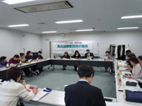
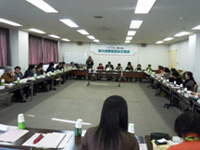
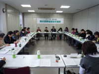
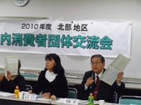

|
|
活動の紹介 『地域における消費者団体活動の広がり・つながり』 北部 くまがやくらしの会

充実した「くらし」の確立を目的に、昭和42年に発足しました。健全で安全なくらしと消費生活の改善・向上を目指して学習・実践に励んできました。熊谷市の産業祭と合わせ消費生活展でのパネル展示、毎年実施している夏休み親子消費者教室等での市民への啓発活動は、市報に掲載すると1週間で定員になります。衣類のリフォームは定期的に行っています。市の環境部からの依頼でマイバッグ運動を大型スーパーなどで取り組んでいます。海外難民救援を目的に不要の衣類のチャリティバザーや海外に送る取り組みもしています。視察研修は、くらしに関わる工場や生産現場の見学、他県・他市の消費者団体・婦人団体との交流を行い、消費者としての意識向上を図っています。

東部 越谷市消費生活研究会 1979年の会の発足以来、消費者問題等、市民への啓発活動として消費者月間記念講演会を始め、講演・学習会の開催を継続。消費者被害をなくす会との連携で、アンケート調査に協力、弁護士やコンサルタントの会の相談員、また県の職員など｢出前講座｣を利用して講師に迎え学習会も行っています。 西部 狭山市消費者団体連絡会

昭和54年の会発足以来、様々な経緯を経て現在5団体で活動。活動費への助成金が徐々に減少していて他機関への会議の参加費・交通費などの負担や活動の範囲を広げるのが難しい課題もありますが、相談員のアドバイスを受け、講師の謝礼に県の補助をうけるなどして、安心なくらしの実現に向けて学習会を開催しています。また、学習したことが隣の市民に伝わることが望ましいと思います。若い人など次世代につながる活動をしていきたいと考えています。また、行政とともに歩み、改善や要望があれば検討し、諸機関へ働きかけ行動したいと思います。 『消費者団体訴訟制度と埼玉消費者被害をなくす会』

埼玉消費者被害をなくす会専務理事 伊藤 恭一 ｢消費者市民社会｣とは、消費者・生活者のくらしが最優先される社会。良い社会を目指すとは、消費者の利益と権利が尊重される公正で健全な消費社会づくりと、憲法の理念が生かされ平和で安心してくらせる社会づくりの2点があります。消費者市民社会の実現のためには、1つは消費者行政・消費者関連法等システムの充実・整備、2つ目は消費者の利益と安全を第一とした商品・サービス提供、3つ目は消費者団体・消費者の役割の発揮が大切です。消費者は生きるために、商品やサービスを購入・消費・利用します。しかしそのプロセスの中で、被害が発生します。過去の消費者被害・問題には、未解決のもの、事件を契機に法整備が進んだもの、消費者団体の申し入れに対し、門前払いに終わるものもありました。製品被害を訴えるなら消費者の立証が必要とまでされた時代を経て、95年に製造物責任法(PL法)が施行され、被害の調査が行われるようになりました。人間として消費者としての権利を確立するため、消費者運動があります。しかし、EUでは60年代に消費者庁のような機関があったことに比べ、日本は2004年｢消費者基本法｣で消費者の権利が明確になったばかりです。それは｢保護｣から｢自立｣を目指していますがその通りにはなっていません。第7条に｢消費者は必要な知識を修得し及び必要な情報を収集する等自主的かつ合理的に行動するよう努めなければならない｣とありますが、これはすなわち｢選ぶ権利｣です。消費者の役割は、消費者力を高める事、そして消費者団体の連携により活力を高めましょう。 ＜各団体の活動交流＞ 参加の各団体の活動の会紹介や、質疑応答を行いました。 |